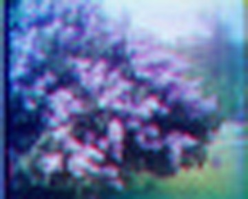
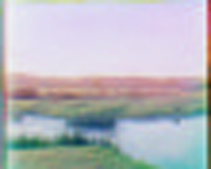
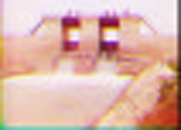
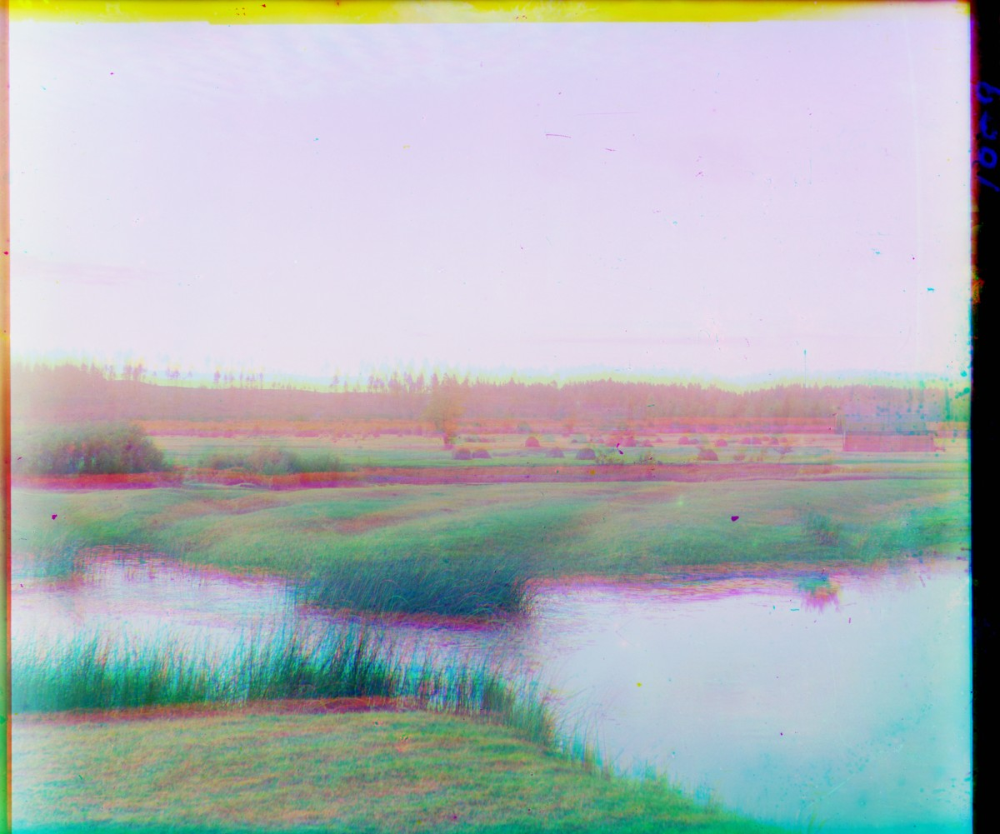
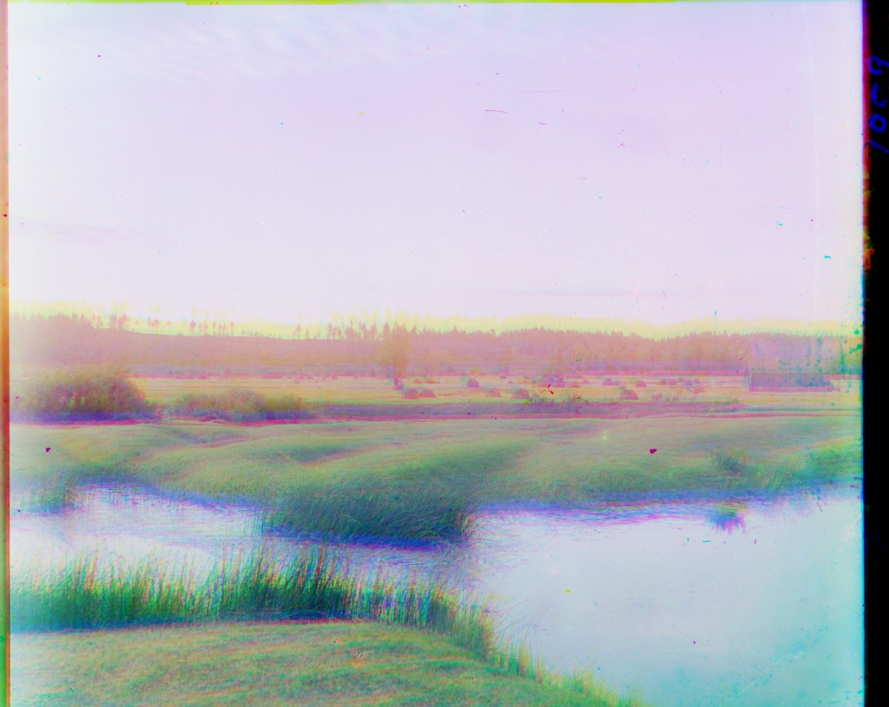
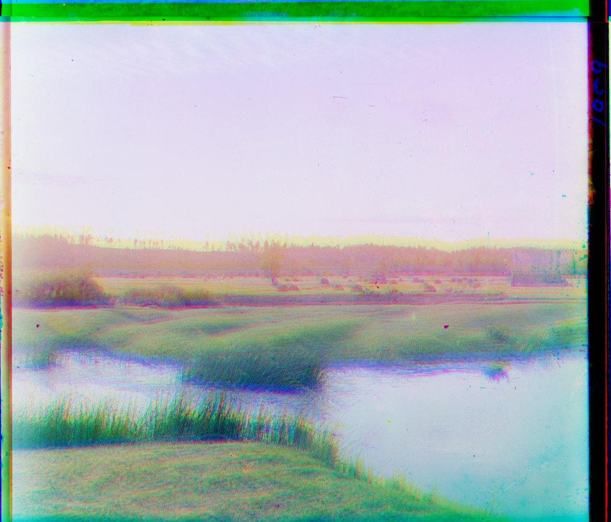
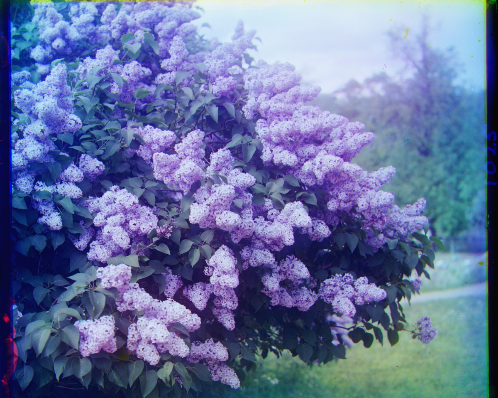
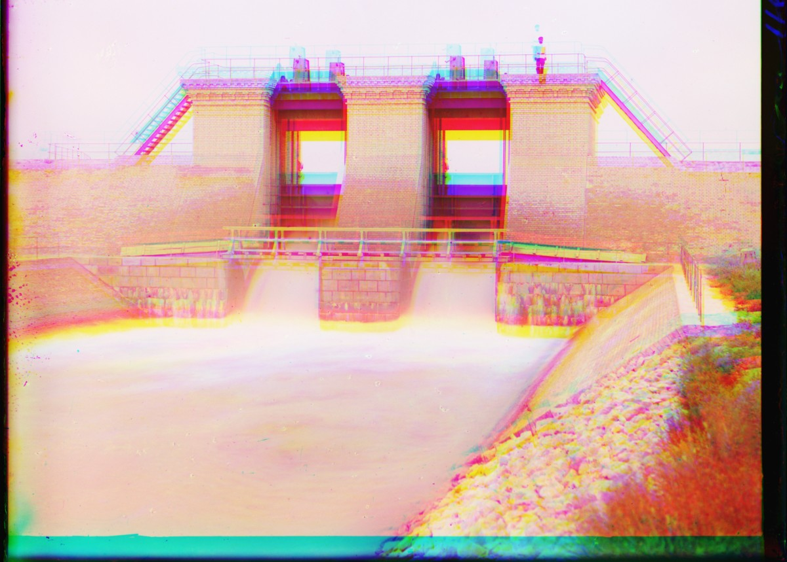

Project 1
Colorizing the Prokudin-Gorskii photo collection. Around 1907 Sergei Prokudin-Gorskii photographed the Russian Empire in color by shooting each scene three times through blue, green, and red filters, recording all three as one stacked grayscale glass plate. This project reassembles the color: split each plate into its three exposures, align them, and stack them back into a single RGB image.
Method
Each plate is cut into equal thirds — blue on top, green in the middle, red on the bottom. The blue channel is held fixed and the green and red channels are shifted to line up with it. A shift is scored two ways: L2 (sum of squared differences) and NCC (normalized cross-correlation), and the best-scoring displacement is kept.
Small JPEGs are aligned by a single exhaustive search over a ±15 pixel window. Large TIFs can't be brute-forced — the true offset runs to hundreds of pixels — so they use an image pyramid: estimate the shift on a heavily downsized copy, then refine it level by level up to full resolution.
Automatic cropping. The black-and-white scan frame around each
plate would otherwise dominate the score and pull the alignment onto the border
instead of the picture. A small auto_crop function detects the frame
— rows and columns that are nearly all black, nearly all white, or nearly flat
(no detail) — and trims all three channels to a common interior before aligning.
Single-scale · small JPEGs · L2 vs NCC
Sirenʹ (Lilacs)


V IAsnoĭ poli͡anie (In Yasnaya Polyana)


Sultan-Bentskaya Dam


At 150 px the previews need only a pixel or two of shift, and L2 and NCC agree exactly — on easy, similar-brightness plates the two metrics are interchangeable. The interesting differences show up at full resolution below.
Choosing the pyramid depth
How far down should the pyramid go? Using In Yasnaya Polyana (true offset R = (133, −32)) as a test, three depths, NCC held fixed:



Medium is the sweet spot. Shallow doesn't downsize enough: its coarsest search can only reach ≈60 px, so it stalls at R dy = 66 — barely half the true 133 — and the result stays fringed. Deep goes too far the other way: the coarsest image is shrunk to a handful of pixels, and the search lands on a meaningless displacement of (−2962, −3648). Because the shift wraps around circularly, that number happens to alias back to roughly the right offset here, so the scene survives — but the reported displacement is unusable and the leftover frame never gets trimmed (note the colored border). On a less forgiving plate that same instability breaks the picture outright. The automatically-chosen middle depth returns the true offset directly — trustworthy and clean — so every result below uses it.
Results · large TIFs · image pyramid · L2 vs NCC
Sirenʹ (Lilacs) — Library of Congress ↗


V IAsnoĭ poli͡anie (In Yasnaya Polyana) — Library of Congress ↗


Sultan-Bentskaya Dam, Murghab Estate — Library of Congress ↗


L2 and NCC land on identical offsets for all three plates — these are well-behaved, similar-brightness scenes where the cheaper metric is already enough. The lilacs and the Yasnaya Polyana landscape come out crisp; the dam keeps a little red/cyan haloing because the water was moving between the three exposures, so no single shift can register the spray.